Circuits seqüencials#
Pàgina en desenvolupament
Encara estem treballant en aquest document.
Esperem oferir-vos properament el seu contingut.
Disculpeu les molèsties.
La sortida dels circuits seqüencials no només depèn de la combinació de les entrades, també depèn de la història d’aquestes entrades.
Veiem un exemple:
Show code cell source
%%html
<iframe src="https://www.falstad.com/circuit/circuitjs.html?ctz=CQAgjCAMB0l3BWc0FwCwCY0HYEA4cEMElURTJyBTAWjDACgwEJiA2cNygZjb08qUMUckxYh2EvP178M0kcNIMA7iFkD1fcAE5hkVVv5g9EhB0kG1G+TO2XDN82Y4n9hyW5fhsHK98lA7HcAGW9uSDQfDgioyggAFwAnAFcqcigGMM80KLBfcFyRRNT0pAMAWSNNXOMuRRQGKpsFWql+IUaAD3AEHXAMeJ0kMAxuECisEABnKgSGHrRuY2WJ5zA0CEmogEUFwuwpVkhD+SjtkCSqWfnF1Yw2DjRnB-6LXYYgA" width="800" height="600"></iframe>
Biestable RS#
Com veieu la sortida \(Q\) (i el seu invers \(\overline{Q}\)) canvia si per un instant les entrades set o reset prenen el valor \(L\), i mantenen el canvi encara que les entrades tornen a estar a nivel \(H\). Com les entrades són actives a nivell baix, s’acostumen a simbolitzar com \(\overline{R}\) i \(\overline{S}\)
Aquest circuit es coneix com a biestable (o bàscula) RS, que té aquest símbol:
i aquesta és la seva taula de veritat:
R |
S |
Q |
|---|---|---|
0 |
0 |
Q |
0 |
1 |
1 |
1 |
0 |
0 |
1 |
1 |
no definit |
Com veieu l’estat de la sortida no està definit per \(R = S = 1\) (recordeu que reset = \(\overline{R}\) i set = \(\overline{S}\))
Circuits síncrons#
El biestable que hem vist abans en realitat s’anomena biestable RS asíncron.
En els circuits seqüencials típicament s’utilitza un senyal de rellotge (CLK, de lànglès clock) que ens indica quan s’han de llegir les entrades. Aquest senyal potser per nivell alt (les entrades són vàlides i el circuit actúa en conseqüència quan CLK = 1), per nivell baix (entrades vàlides quan CLK = 0), per flanc de pujada (entrades vàlides quan CLK passa de 0 a 1) o per flanc de baixada (entrades vàlides quan CLK passa de 1 a 0).
Aquí veieu el nostre biestable RS síncron amb CLK per nivell alt:
Show code cell source
%%html
<iframe src="https://www.falstad.com/circuit/circuitjs.html?ctz=CQAgjCAMB0l3BWcMBMcUHYMGZIA4UA2ATmIxAUgoqoQFMBaMMAKDAQhQUJExRGyE8vDPypiKbDr27gALHIFD5i8dQQsA7kuFgFO8Bh6QtBsEZk8Ucqie2DhfA9dumHvG5cPHTXHuatZMEJXbT8PcVlwkwBZM30FXX1xaA049ydEkQkUVKkIMBRdIq9C4TUkDXYCkqLHKLxy3nVTMoFIRWIeXFVTLvbO-2S+ocU2vV6AGXAS5n5CMcKoZYAXACcAVzpqE2m2pwXs5ap1rZ2WACUQfp7r7oR+TmQUpFykWzyAe3AkQ6o5MCQMSweBGFDEbDEOQIbCFd4guBkQjcLjLR5IbAgADOdBWLG+wRAfxAAKBUARkDBEKhMLh5PgkCRKPezUJmLWdBxeO+wmJpP48IZTMIqKoEAAivjDETVCTAQL6fBhaLWeRMQBjAA2AGsWEA" width="800" height="600"></iframe>
Cronogrames#
La gràfica al peu del simulador és un cronograma: ens indica el valor de les entrades i sortides en el temps. Moltes vegades és més fàcil definir un dispositiu seqüencial amb un cronograma que no amb una taula de veritat. Aquest és el cronograma d’un comptador de 4 bits:
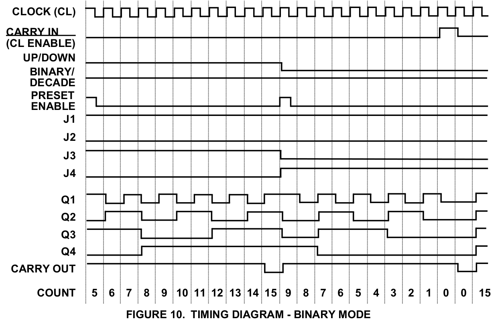
Moltes vegades aquests cronogrames inclouen informació sobre els tempes necessaris pel bon funcionament del dispositiu:
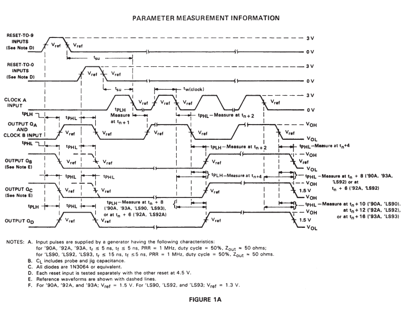
Biestable JK#
La combinació \(R = S = 1\) del biestable RS no és útil al no estar definida, i pot donar problemes. Amb unes quantes portes lògiques més podem tenir un biestable semblant al RS que inverteixi el valor de la sortida. És la bàscula JK. Aquí la podeu provar (CLK per nivell alt):
Show code cell source
%%html
<iframe src="https://www.falstad.com/circuit/circuitjs.html?ctz=CQAgjCAMB0l3BWcMBsBmALAJhQdgWgJwAcYKCFICkVVNCApgLRhgBQYCEGaW4GGKlmL9BNPvQ5cQPPlgQohI+YvG0EbAO4zeILFkGy9GGpC06+ZGkbC5V5hML0GlehVAdP9h3bfvbHETABVz8PAKcwo28PTgheGjAnGyc1JA04kAS9XD5o3Kg9Qo1tbODBbJVwrKxxd2y0NHtMsEJLEOEgkLVJFra3RU6Bwr508zKkvWIgybNtIdY5adFqoaq15bmp5WXKzfNWyxRE-rCtw+MTuRcttZc191vlmIuz8wW7bZWnoM+LmLMmWIiUip1SWXUbAAkiAUBUmjUaI1VFBoGMALKhEIIU7dPRotiYwLDHFyR74jQADyoYBmuCoCKS1mMIAAimxqY4kZB0mgRGhICJBoJ2aVLJNgeBZhystZ6Wh6dQZCyAFJsABKsPhil0yPARSZFKNpgJQPEBX+BSRkO0NmOFi11SMcJAkpdWzdgklSREZgAMjVhroAfqAGYAQwANgBnBi0MzUlytNBZQjgQiKQQuADS5hdepdVS2hfckqL5m9IRd5Wq1arWce4yW-LJ-kDQzL+1twZMDqavvMRn7rqRKAH2klw7LVrYAd8k10ksSIAjMbjSATIBYkAgmTTnEM4D4KuzAB0AI5wABcp+jADkAPa3gDCAAtwwA7ADmDBl293KBpkwCrgAUgiTCeF5gJAN7RgAygwAAuf7QbuxD0kwWApq0zIQWel5gLB6oMLGyHUv+eg8lutKUSI4HHvhrCwQAKg+X5fpGv4PjIQpiDI0GjKi8CQIQdgKPIIw8RCarcSB7r8ZAgkwMJonkCgElqCBKa5txOCOtYAnxrA8CqeJG76uysl8PJGCGRuxlwKZ6nmXwuogAAxpGADWbBAA" width="800" height="600"></iframe>
Típicament els circuits seqüencials s’activen amb rellogte de flanc, ja que permet una definició més exacte de quan són vàlides les entrades. Aquest és el símbol d’una bàscula JK activa per flanc de pujada:
Fixeu-vos en el símbol del mig de l’esquerra: aquest angle simbolitza el CLK per flanc de pujada. Si fos per flanc de baixada posariem una boleta de negació a l’entrada.
Biestable D#
Aquest biestable permet emmagatzemar un bit quan el CLK està actiu.
Com podeu veure al simulador, l’activació per flanc del rellotge és més complicada que per nivell:
Show code cell source
%%html
<iframe src="https://www.falstad.com/circuit/circuitjs.html?ctz=CQAgjCAMB0l3BWcMBMcUHYMGZIA4UA2ATmIxAUgoqoQFMBaMMAKDAQmzRExRABYuPDHyqiKbDiC5Uw-fgKFyFY6ghYB3RX2XbwGQlE16wB6dxT8qkY4L689l67aFPzssza0z9hn2EJnbwsrdx4EQxt2CADZeWEdeNVaSRjAgTwEjKgeNVTwdIcikRzsPOiCqmxCTIdqzOSJLViQQgUWvCDKkE6s5lFjFrAUTKHho2b0-qzerxmxEv4GwcK8UfTcFRWqyAU66oms7AO6msOW7AQdDYO5i5OSzcOHYcz-EeeSkbeLNc+dMwtNx3DY6D5CO4ffgBLLQyLbLLEQwOOZI7pDdIgqp4BRo7A4owAGRAeIJQnxKnAIAAZgBDAA2AGc6NQbAAlEnIx72EoQHRwHjQJAoIU5GDqACyJni-DRujEQpYUrssLRKMF6i0cvSapKWPChiBoTmL3iL08xlOtUWMMhmTh4HBAy0L3GLw+Jt5H1NWxdX399j+nsD1r4TxsAHtpFQ2jloZA+EgYPBIGRCBEUEncrhpCAACIsKNCWNUeOJqCweBpjNZiAARUL0ggJYEYATrMrcGrhEzOTDnBAAGN6QBrFhAA" width="800" height="600"></iframe>
El biestable D té aquest símbol:
Comptadors#
Podem comptar els cicles de rellotge amb un conjunt encadenat de bàscules JK:
Show code cell source
%%html
<iframe src="https://www.falstad.com/circuit/circuitjs.html?ctz=CQAgjCAMB0l3BWcMBMcUHYMGZIA4UA2ATmIxAUgoqoQFMBaMMAKDAUJDypRQBZwKPCF4CqkNhxH4R-EXx5zxkztmydRIdcM3L2nPoQGa+3WWKgsA7uAwa5YOyKkSbjjVLQ6X1rZGNyuMY+NkHOqurhljZ82CjmILHxKCGJcVGGwZyuiUYJfKYJOQU6ciUieMLFhULCmRVVvuW1iYVq2U1tkXFU7dFaaFrdgy05PQ1DGpX94y2zSr7zAn26vl4JYMTJC25bG3ujvpvJ0+uHuyfCx5P9133jfTlmmnmrNq9yr9M5X8LP375fiA8o9ActIndIhIAEpcHhSdIpTgQZJwETQJAoDFQKAYliwkHDG7iRK0HHiPE2DiKATU4FiJqIsrpYgdUL+BJhMBCW5OTTucCEZQAWQoQvpiWEr3RCBYoqSIFZksVGhlcr8Am5dSuPOSeNFArA4sKRp4ar4mwoezyRioeSofF8dLyCGtDJiLM4rviSrGHK1VviAZyhvF3sFygA9lokPbEmBIPEkDB4JAyIQOCkcaxo5E4xbE9QU-B05nk+AWLnyPmE0ncanS4Qs1Qc1opRYC3Xi3BG82K0A" width="800" height="600"></iframe>
Registres de desplaçament#
Quan volem transmetre la informació de vegades hem de fer una transformació sèrie / paral·lel o a l’inrevès. Un exemple és l’escriptura de l’estat d’una matriu de 8x8 leds amb només dues lìnies (CLK i DATA). En aquest cas fem servir registres de desplaçament:
Show code cell source
%%html
<iframe src="https://www.falstad.com/circuit/circuitjs.html?ctz=CQAgjCAMB0l3BWcMBMcUHYMGZIA4UA2ATmIxAUgoqoQFMBaMMAKDASQBZO8Q1fOxQn3xQobDhUJV+Iab1lVILAO4VuI3gmmbx7JIQwpdRmaKUSkGPJ115sxxeIBKIbIV7Z3btG+8RjMDg+aCQUULEYBFU3Dz9hbk9vZTVE+JA0lE4LNW0qL2E8vmzxABkMsGFZTkqK4SUQADMAQwAbAGc6ahS63UzzFgAPPypOFGNsYggxrmKQAEsAOwAHAFcAFyG5PAhmKgwdZmwMuYB7DbXNtUJtXUNHAdSedKKC8VydN-v0nu+vo2KORABwUomstkUMXBgOBNh+ULh-wmyRYAFl1BDRAgNGANDJQmi5LdZDdhLjbPjouiQSY4uSxOEqSA8HgzLwWVR6ZSWEA" width="800" height="600"></iframe>
Productes comercials#
Dispositiu |
C.I. TTL |
pin-out |
C.I. CMOS |
pin-out |
|---|---|---|---|---|
Bàscula JK |
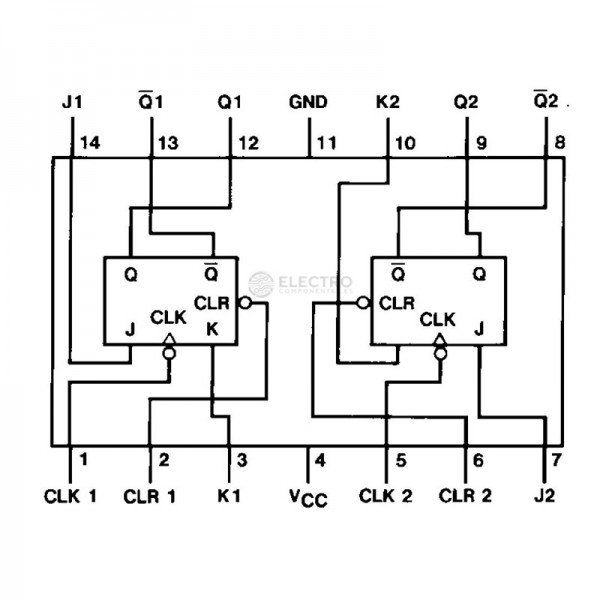 |
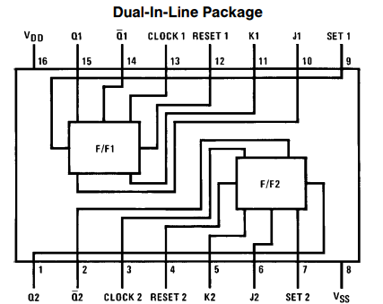 |
||
Bàscula D |
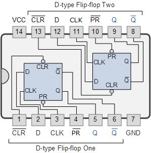 |
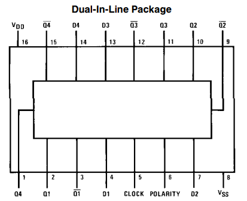 |
||
Comptador 4 bits |
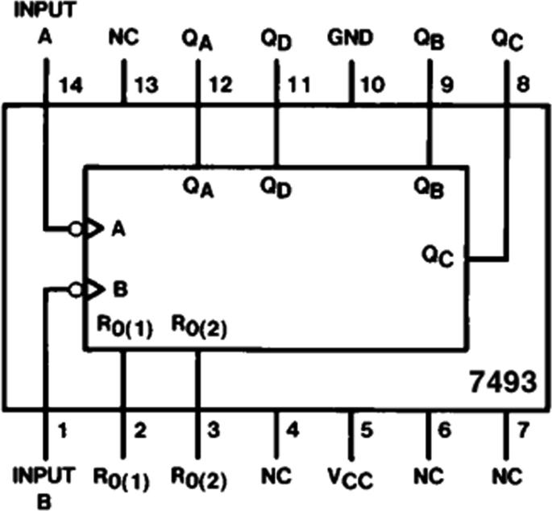 |
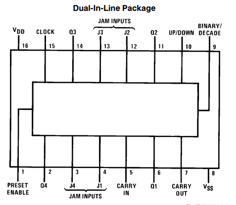 |
||
Registre de desplaçament 8 bits sèrie / paral·lel |
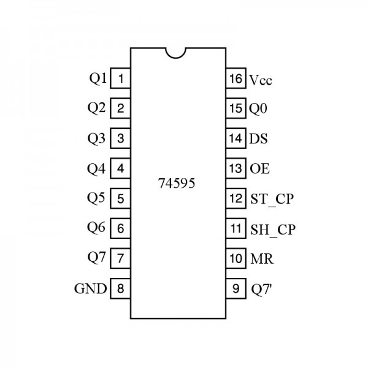 |
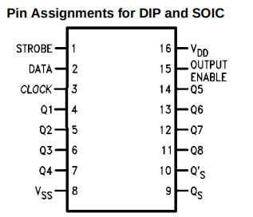 |
||
Registre de desplaçament 8 bits paral·lel / sèrie |
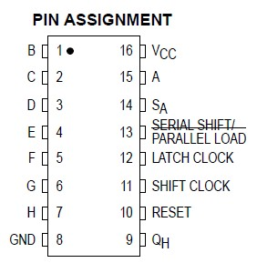 |
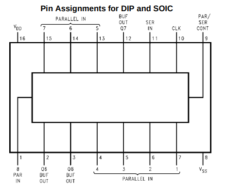 |